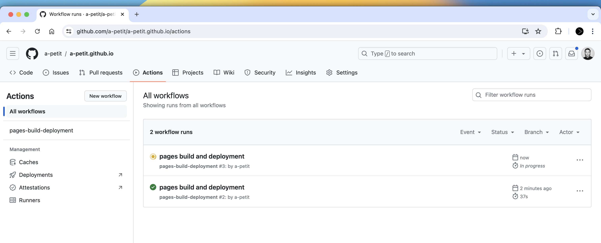
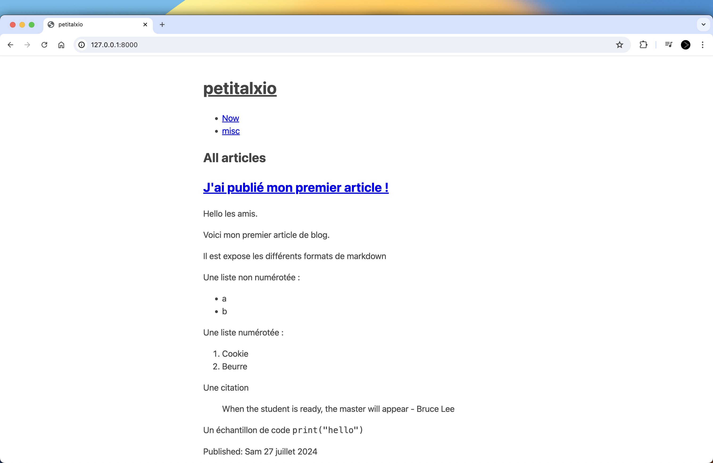
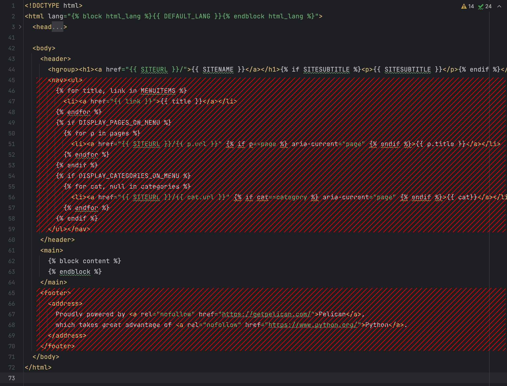
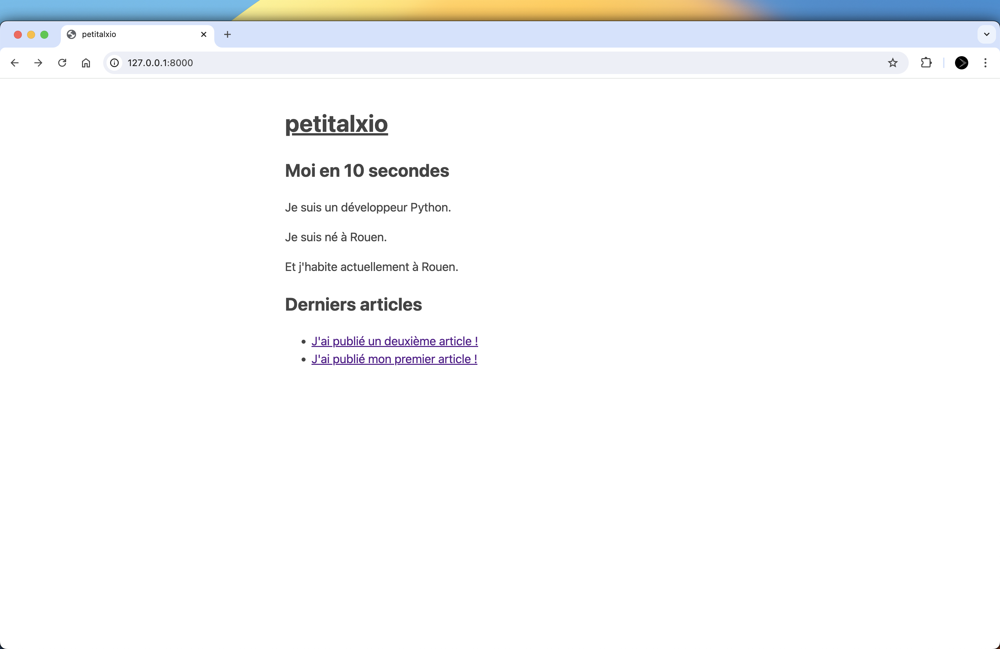

Comment créer un site personnel avec Pelican (Python)
Hello !
Dans cet article, on va voir comment créer un site personnel :
- avec le générateur de site statique Pelican (écrit en Python)
- hébergé sur Github Pages
- à partir de contenu Markdown
Le résultat final ressemble à ça.
If you don't give a shit about le contexte et mon processus de décision, tu peux sauter directement à la section "Créer le site". Si à un moment tu es perdu dans les explications, tu peux toujours regarder le code source de mon site.
Contexte
Cela fait plusieurs mois que j'expérimente différents supports d'écriture :
- je me suis lancé sur LinkedIn
- j'ai créé une newsletter sur Substack
- j'écris deux pages par jour dans un carnet physique depuis 20 jours
Une difficulté que je rencontre est que je n'ai pas de ligne éditoriale claire, pas de promesse.
J'ai envie d'écrire sur des sujets variés :
- de retours d'expérience de projets techniques
- des "récits" de voyage
- des points d'avancement de projet
- des tutoriels
- des résumés de livres
- des réflexions
- ...
Et je n'ai pas envie de m'imposer de façon "push".
Pour ces deux raisons, un site personnel me semble être une bonne solution.
Aussi je veux réaliser 30 projets en Python en complément de The Developer's Brain. Créer un site personnel en python apparaît comme bon challenge !
Cadrer le projet
Ma motivation est de "claim a personal domain", de m'installer dans un coin de la carte.
Ce qui va être important pour moi est de :
- livrer
- choisir une solution simple
- avoir un processus de décision clair dans le choix des technologies
- faire un projet en python pour pousser mon expertise sur ce langage
Les risques que je perçois sont :
- de tomber dans un rabbit hole lors du choix de la technologie
- de me torturer le cerveau pour choisir une solution d'hébergement
- de choisir un outil trop complexe pour mon besoin
OK.
À présent, je suis mis en garde.
Choisir la technologie
Pour créer un site avec Python, j'ai d'abord pensé aux technologies suivantes :
- Django : un framework fullstack populaire pour créer des applications web
- Flask : un framework léger pour créer des applications web
Je me suis posé la question
Quelle framework choisir pour créer un site personnel ?
Je suis tombé sur ce fil Reddit Best framework for portfolio website?.
Les réponses sont unanimes : utiliser Django ou Flask revient à se compliquer la vie. Un générateur de site statique est plus simple, moins cher et plus rapide.
Un générateur de sites statique est une application qui prends en entrée des fichiers textes et les converti en fichiers HTML.
Les générateurs de site statique ont les avantages suivants : - Simplicité : ils sont en général plus simple à appréhender que les frameworks Fullstack qui présentent davantage de fonctionnalités comme de l'authentification, des interactions avec une base de donnée. - Prix : il existe de nombreuses solutions d'hébergement gratuit - SEO : les pages sont statiques et donc facilement indexables par les moteurs de recherche
Je me suis donc tourné vers les générateurs de site statique.
Choisir un générateur de site statique
Les solutions les plus tendances sont :
- Jekyll
- Hugo
- Astro
Jekyll existe depuis 2008. L'outil est écrit en Ruby. Plus de 180k sites web sont construit avec, et c'est la technologie qui est proposée par défaut pour Github Pages. Il bénéficie communauté, d'un écosystème de plugins. La galerie démontre qu'il est possible de faire des sites esthétiques et complets avec.
Hugo existe depuis 2013. Il est écrit en Go et se veut le générateur statique le plus rapide (en termes de compilation). Il est utilisé par presque 300k sites. Il dispose de fonctionnalités de localisation, et peut être associé à des frameworks CSS comme Tailwind.
Astro est un générateur de site statique qui permet de combiner Svelte, React et Vue. Je l'ai tout de suite écarté car un wrapper autour de frameworks indique une complexité élevée.
Et python ?
Il existe bien un générateur de sites statiques en python : Pelican.
Pelican existe depuis 2010 et a été créé par Alexis Metaireau. Il est utilisé par seulement 3500 sites, mais il dispose d'une documentation claire. Et comme il est écrit en python, je pourrai contribuer au code source au besoin. Au première abord, il dispose de toutes les fonctionnalités dont j'ai besoin : il y a une section blog, des pages on peut ajuster le style.
Je choisis donc Pelican.
Choisir une solution de déploiement
Il existe des dizaines de solutions pour déployer un site statique, parmi lesquelles :
- AWS
- Netlify
- Github Pages
- Mon propre serveur
Je veux une solution gratuite et simple.
J'ai entendu beaucoup de bien de Github Pages.
Je vais tester cette solution.
Créer le site
Ok, on entre dans le vif du sujet.
Dans la suite de l'article, on va suivre ensemble les étapes que j'ai suivi pour construire mon site personnel https://petitalx.io.
petitalxest mon username Github. Naturellement, vous pouvez remplacer toutes les occurrences depetitalxpar votre username. Vous ne pourrez pas copier coller toutes les instructions. Mais cela fera travailler votre mémoire mécanique :).
Créer un walking skeleton
Notre premier objectif est de configurer et déployer un site le plus rapidement possible. On pourra ensuite itérer pour ajuster le style, ajouter du contenu, et simplifier le code.
Pré-requis :
- avoir un terminal unix
- avoir Python installé
- avoir un compte Github
- connaître le ba-ba de git
Initialisation du projet
On commence par créer le projet en local.
cd ~/dev
mkdir petitalxio
cd petitalxio
python --version
python -m venv .venv
source .venv/bin/activate
Créer un fichier requirements.txt avec la lignepelican[markdown] :
echo "pelican[markdown]" > requirements.txt
Puis installer les dépendances
pip install -r requirements.txt
Lancer l'assistant de création de site
pelican-quickstart
- créer le site dans un dossier
_pelican - choisir
frcomme langue par défaut - ne pas expliciter de préfixe d'url
- désactiver la pagination
- renseigner
Europe/Pariscomme timezone - demander à générer le fichier Makefile
- répondre pour l'upload avec FTP, SSH, Dropbox, S3 et Rackspace
- répondre oui à la question "Do you want to upload your website using GitHub Pages?"
- répondre ui à la question "Is it your personal page" ?
OK !
Pour visionner le site en local, lancer les commandes
cd ~/dev/petitalxio/_pelican
pelican content
pelican --listen

Remarque : vous pouvez ensuite supprimer le dossier
_pelican/outputcar dans la section suivante nous allons changer le chemin de sortie des fichiers.
Publier sur Github Pages
Rendez-vous sur votre compte Github : https://github.com/.
Créer un nouveau repository username.github.io où username est votre nom d'utilisateur Github. Ne pas initialiser le README ni le .gitignore à ce stade.
De retour sur votre poste, se replacer à la racine du projet
cd ~/dev/petitalxio`
Créer un fichier .gitignore avec le contenu suivant
.venv
**__pycache__**/
(par exemples avec la commande echo ".venv \n**__pycache__**/" > .gitignore)
Initialiser le dépôt git
echo "# petitalx.github.io" >> README.md
git init
git add README.md
git commit -m "first commit"
git branch -M main
git remote add origin https://github.com/petitalx/petitalx.github.io.git
git push -u origin main
La façon la plus simple de déployer le site est de générer le contenu du site à la racine du répertoire. Pour faciliter les manipulations, on va modifier le Makefile afin que la commande make publish génère le site à la racine du répertoire.
Ouvrir le fichier _pelican/Makefile et modifier la ligne OUTPUTDIR tel que
OUTPUTDIR=$(BASEDIR)/..
Lancer make publish depuis ~/dev/petitalxio/_pelican.
Depuis la racine du répertoire, lancer
git status
git add .
git commit -m "generate content"
git push
Vérifier que le déploiement est en cours dans le volet "Actions" du répertoire Github :

Une fois le déploiement terminé, votre site est accessible à l'adresse https://username.github.io

Notre site personnel est en ligne !
🚀
Ajouter les premiers contenus
Dans cette section, on va voir :
- comment créer une nouvelle page
- comment créer un nouvel article
- comment publier les mises à jour
Depuis le dossier
_pelican, lancer la commandemake devserverafin de lancer le serveur et d'activer le mode auto-reload. Le mode auto-reload va générer les fichiers html locaux de façon automatique dès lors qu'un fichier est modifié.
Création d'une page now
À quoi bon créer un site personnel si l'on y met pas une page "now" ? 🤷♂️.
Une page now est une page qui indiquer au visiteur ce que l'on fait actuellement. Ton portfolio donne une bonne idée de ce que tu as réalisé par le passé. Ta page now donne un aperçu de ce qui t'occupe actuellement.
L'idée est de mettre dedans ce que tu raconterais à un amis que tu n'as pas vue depuis un an :
- où est-ce que tu vis
- quels sont tes challenges
- sur quels projets est-ce que tu travailles
Créer un fichier now.md dans le dossier ~/dev/petitalxio/_pelican/content/pages :
---
Title: Now
---
> Mis à jour le 28 juillet 2024 à Rouen, France.
Je travail actuellement pour EDF en tant que Software Engineer où je développe un service de détection d'anomalies sur des séries temporelles.
Mon axe de travail sur les prochains mois sont de rassembler et synthétiser les 99 meilleurs livres sur le Software Engineering.
En complément de ce projet axé sur la théorie, je réalise réaliser 100 challenges en Python. Ce site constitue l'un des challenges.
Et regarder le résultat sur la page http://127.0.0.1:8000
Si vous cherchez des exemples de pages "now", consultez
- https://sive.rs/now (la page du boss)
- https://nownownow.com/ (l'annuaire des pages now)
Création d'un premier article
Créer un fichier mon-premier-article.md dans le dossier ~/dev/petitalxio/_pelican/content/ :
Title: J'ai publié mon premier article !
Date: 2024-07-27
Hello les amis.
Voici mon premier article de blog.
Il est expose les différents formats de markdown
Une liste non numérotée :
- a
- b
Une liste numérotée :
1. Cookie
2. Beurre
Une citation
> When the student is ready, the master will appear - Bruce Lee
Un échantillon de code `print("hello")`
Visualiser et publier les mises à jour
Pour visionner le résultat en local, lancer :
cd ~/dev/petitalxio/_pelican
make devserver
Pour déployer, lancer
cd ~/dev/petitalxio/_pelican
make publish
cd ~/dev/petitalxio/
git add . ; git commit -m "update content"; git push
Vous avez maintenant toutes les clés en main pour ajouter du contenu sur votre site.
Pour aller plus loin, la documentation est là pour vous aider.
Mettre en forme
À présent que l'on a travaillé le fond, passons à la forme.
Dans cette section, je te propose de faire évoluer le design de notre site personnel vers ce style, qui est un mélange entre le site personnel de Derek Sivers, et la simplicité de http://bettermotherfuckingwebsite.com/
Pour cela, on va repartir d'un thème "simple".
Mise en place d'un thème explicite
- récupérer les fichiers suivants https://github.com/getpelican/pelican/tree/main/pelican/themes/simple/templates et les copier dans
_pelican/themes/petitalxio/templates - ajouter
THEME = "themes/petitalxio"danspelicanconf.py - régénérer le site
Tout est à plat !

Ajout d'une feuille de style CSS
Coller le contenu suivant dans un fichier _pelican/themes/petitalxio/static/style.css
body {
max-width: 650px;
margin: 40px auto;
padding: 0 10px;
font: 18px/1.5 -apple-system, BlinkMacSystemFont, "Segoe UI", Roboto, "Helvetica Neue", Arial, "Noto Sans", sans-serif, "Apple Color Emoji", "Segoe UI Emoji", "Segoe UI Symbol", "Noto Color Emoji";
color: #444;
}
h1 > a {
color: #444;
}
@media (prefers-color-scheme: dark) {
body {
color: #c9d1d9;
background: #0d1117;
}
a:link {
color: #58a6ff;
}
}
Puis ajouter la référence à la feuille de style dans le fichier template base.html :
<!DOCTYPE html>
<html>
<head>
{% block head %}
<title>{{ SITENAME|striptags }}</title>
<meta charset="utf-8" />
<meta name="generator" content="Pelican" />
<!-- 👇👇👇👇👇👇👇 -->
<link rel="stylesheet" type="text/css" href="{{ SITEURL }}/theme/style.css" />
<!-- 👆👆👆👆👆👆👆 -->
<!-- ... suite du template -->
Régénérer, et le tour est joué.

Attention, pour que pelican embarque la feuille de style sans configuration supplémentaire, il est nécessaire qu'elle se trouve dans un dossier qui soit nommé "static" placé à la racine du thème. L'exemple
themes/petitalxio/static/style.cssvalide ces conditions.
Finalement, lancer les commandes suivantes afin de déployer votre site web :
shell
cd ~/dev/petitalxio/_pelican
make publish
cd ..
git status
git add .
git commit -m "update website"
git push
Simplifier le template
On va à présent simplifier les templates suivants :
base.htmlindex.htmlpage.htmlarticle.html
Commençons par le fichier base.html :

- supprimer le bloc
<nav> - supprimer le bloc
<footer>
Continuer avec index.html :

- remplacer le
{% block content_title %}par un simple<h2>et en profiter pour traduire le texte - remplacer la liste de miniatures par une simple liste de titres d'articles
- supprimer le bloc dédié à la pagination car on l'a désactivé pendant le quickstart
Poursuivre avec le template article.html :

- supprimer les directives liées à la traduction
- simplifier l'affichage du titre pour utiliser une simple balise
<h2> - supprimer les blocs de métadonnée du footer liée à l'auteur, à la catégorie et aux tags
Et terminer avec page.html

Création d'une page Home personnalisée
Créer un fichier home.md dans `_pelican/content/pages/
---
Title: Home
---
## Moi en 10 secondes
Je suis un développeur Python.
Je suis né à Rouen.
Et j'habite actuellement à Rouen.
[now](now)résulte en un lien html relatif à la l'url courante. Si on est à l'urlpetitalx.io/pages/home.html, cela donnepetitalx.io/pages/now. Le pré-processeur{filename}ne semble pas fonctionner chez moi.
Ajouter les lignes suivantes dans le fichier pelicanconf.py. Cela va créer une variable globale HOME qui va contenir le contenu HTML.
# En tête de fichier :
from pelican.readers import MarkdownReader
from pelican.settings import DEFAULT_CONFIG
# Plus bas :
config = DEFAULT_CONFIG.copy()
HOME, _ = MarkdownReader(config).read("content/pages/home.md")
On peut à présent faire injecter le contenu de la variable HOME dans le template de l'index. Ajouter la ligne {{ HOME }} à la suite de la ligne {% block content %} dans le fichier _pelican/themes/petitalxio/templates/index.html. Le début de votre fichier doit alors resembler à cela :
{% extends "base.html" %}
{% block content %}
{{ HOME }}
Régénérer, et admirer le résultat.

BONUS : Code minimalism
Ok, on a bien simplifié le design !
Maintenant, j'aimerais simplifier le code.
Cette étape peut paraître superflu. Mais vous allez voir, après on se sent mieux.
Chaque fichier, chaque ligne de code qui est dans notre projet représente un cout. C'est une ligne de plus à lire lorsque l'on cherche à faire évoluer notre site, un fichier en plus à maintenir, une information supplémentaire à traiter.
Dans cette section, on va éliminer le code inutile.
Ne plus générer les pages qui ne nous servent pas
Commencer par désactiver la génération des pages "Author", "Authors", "Tag", ... en ajoutant ces lignes au fichier pelicanconf.py :
TAG_SAVE_AS = ''
TAGS_SAVE_AS = ''
CATEGORY_SAVE_AS = ''
CATEGORIES_SAVE_AS = ''
AUTHOR_SAVE_AS = ''
AUTHORS_SAVE_AS = ''
ARCHIVES_SAVE_AS = ''
Nettoyer le dossier des templates pour ne conserver que les 4 fichiers suivants :
templates
├── article.html
├── base.html
├── index.html
├── page.html
Nettoyer le fichier de configuration
Nettoyer le fichier pelicanconf.py
 - supprimer la variable
- supprimer la variable LINKS : c'était une variable custom du template initial
- supprimer la variable SOCIAL : idem, elle ne sert plus
- supprimer la variable DEFAULT_PAGINATION qui utilise déjà la valeur par défaut
- supprimer le code commenté relatif à RELATIVE_URLS
- supprimer le lignes qui annulent la génération du feed
Nettoyer le Makefile
Le Makefile généré par pelican-quickstart met à disposition des commandes utiles.
Je te propose de ne conserver que le strict minimum pour développer efficacement :
- help : affiche l'aide du Makefile
- clean : supprime les fichiers HTML et XML de sortie
- devserver : lance le serveur local et le hot reload
- publish : génère le site la config serveur
- github : génère le site et upload notre repository sur Github
En regardant le détail de commande, on se rend compte que la commande clean est dangereuse en l'état. Comme on génère le site à la racine du repo, lancer make clean entraine la suppression de tous nos fichiers !
Aussi, la commande Github utilise ghp. Ce n'est pas l'option que nous avons choisi pour déployer.
Voici la version du fichier mise à jour (à partir de la ligne help) :
help:
@echo 'Makefile for a pelican Web site '
@echo ' '
@echo 'Usage: '
@echo ' make clean remove the generated files '
@echo ' make publish generate using production settings '
@echo ' make devserver [PORT=8000] serve and regenerate together '
@echo ' make github upload the web site '
@echo ' '
@echo 'Set the DEBUG variable to 1 to enable debugging, e.g. make DEBUG=1 html '
@echo 'Set the RELATIVE variable to 1 to enable relative urls '
@echo ' '
clean:
rm $(OUTPUTDIR)/**.html; rm -rf "$(OUTPUTDIR)/feeds"; rm -rf "$(OUTPUTDIR)/pages"; rm -rf "$(OUTPUTDIR)/theme"
devserver:
"$(PELICAN)" -lr "$(INPUTDIR)" -o "$(OUTPUTDIR)" -s "$(CONFFILE)" $(PELICANOPTS)
publish:
"$(PELICAN)" "$(INPUTDIR)" -o "$(OUTPUTDIR)" -s "$(PUBLISHCONF)" $(PELICANOPTS)
github: publish
git add -A
git commit -m "Update site"
git push origin $(GITHUB_PAGES_BRANCH)
.PHONY: help clean devserver publish github
Enfin, il est aussi possible de supprimer le fichier _pelican/tasks.py qui fait doublon avec notre Makefile.
Et voilà.
Le projet est finalement très simple :)
Conclusion
- Mes notes de second cerveau
- J'ai pris une décision confiant !!
Ressources utiles
- La documentation de Pelican : https://docs.getpelican.com/en/stable/index.html
- La documentation de Github Pages : https://pages.github.com/
Je pose ici quelques pistes pour aller plus loin avec Pelican :
- créer son propre générateur
- créer son propre plugin
- créer le thème bettermotherfuckingwebsite pour contribuer
- prendre une issue